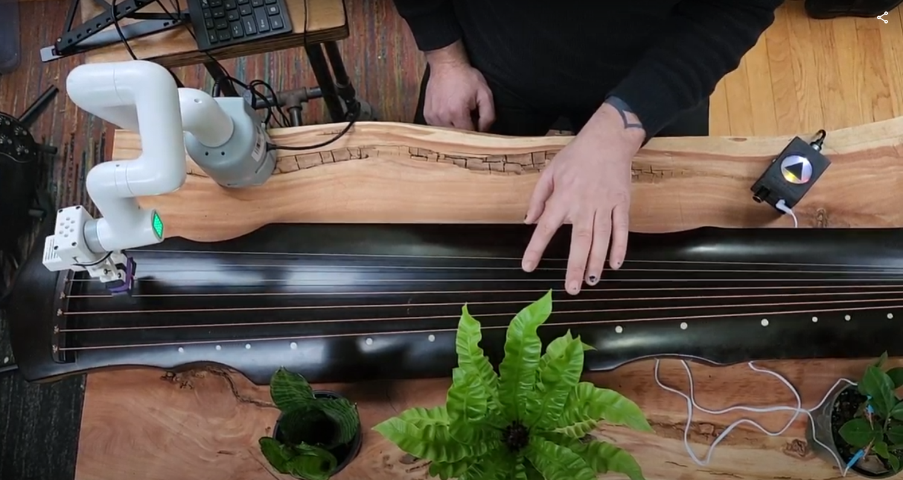
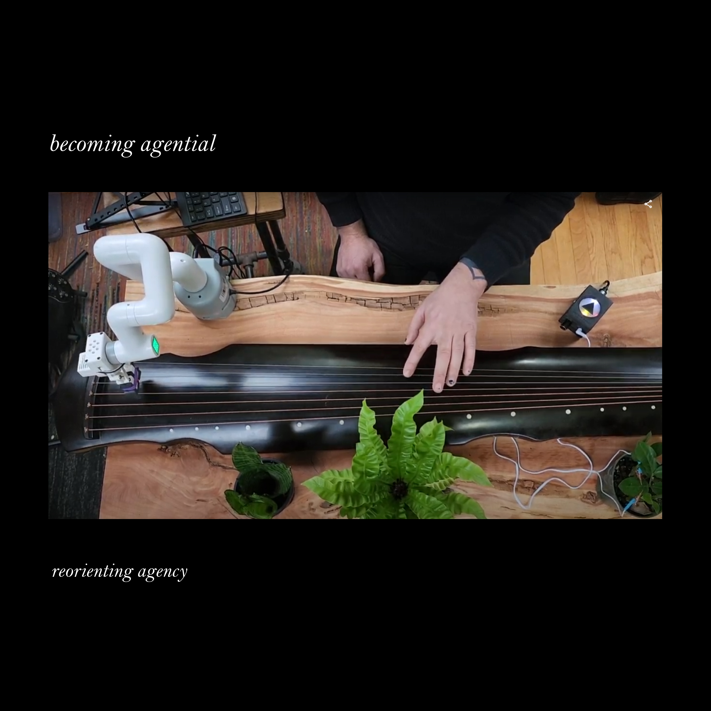
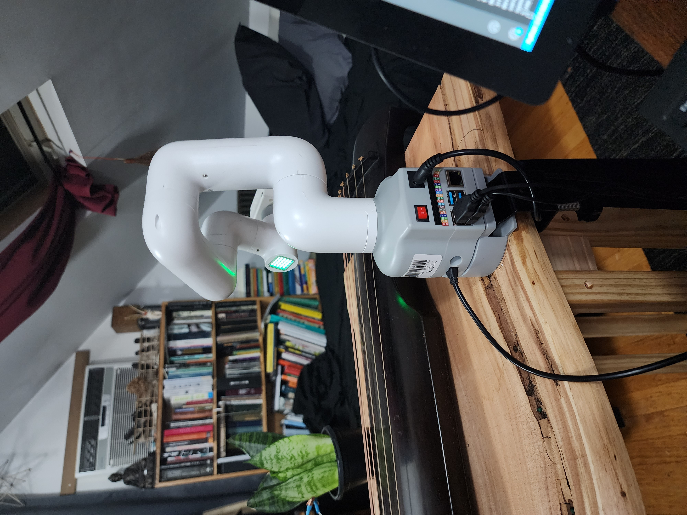
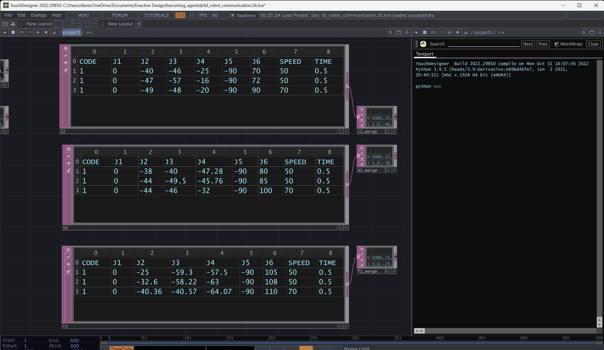

Danny Clarke’s evolving studio, archive, publication
A place for what becomes sensible through making.
Enter the current field ↓Wind / fabric / partial view
Index, 2026
A first path through the archive
Becoming
Agential
What changes when a plant, an instrument, a robotic arm, and a person make sound together?
Becoming Agential stages a plant’s fluctuating biodata as instruction: a signal enters TouchDesigner, travels over a local network, and positions a robotic arm to pluck a guqin. The work does not use the system to illustrate agency. It lets agency remain distributed, contingent, and heard.



The apparatus is part of the composition
A signal becomes
a gesture becomes
a listening event.
- 01
Plant
Electrodes register minute changes in conductivity from a spider plant, crispy wave fern, or ZZ plant. - 02
Translation
A biodata device sends MIDI into TouchDesigner, where notes are averaged and remapped across seven strings. - 03
Gesture
A WebSocket carries positional instructions to a MyCobot Pi 280. The arm reaches, lowers, and plucks. - 04
Relation
A human holds the guqin’s strings, responding and anticipating. The plant does not become an interface; it remains a participant.
Process record
Instructions in motion.
Code, MIDI, message passing, calibration, and the repeated negotiation between a living signal and a mechanical action are not backstage documentation. They are the work’s visible tempo.

Research fragment
“The proposal is a re-conception of posthuman relations where algorithms and robotics are reframed as prosthetic actors.”
Danny Clarke, Becoming Agential, draft research paper, 12 December 2022.
Outward from this path